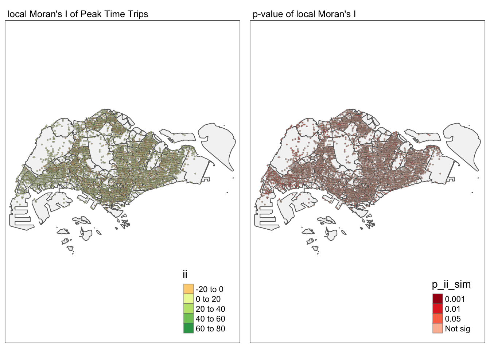
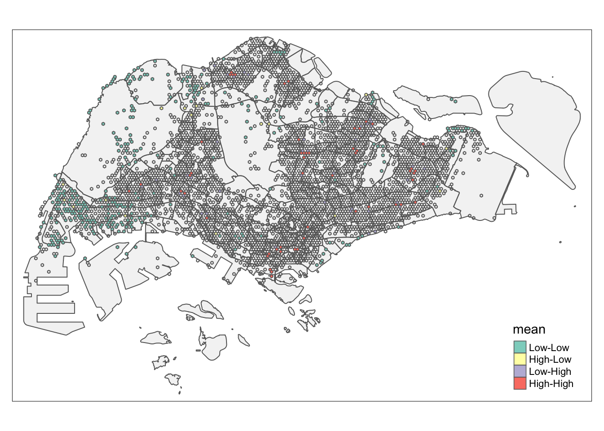

Code
pacman::p_load(sf, spdep, tmap, tidyverse, sfdep, Kendall)As city-wide urban infrastructures such as buses, taxis, mass rapid transit, public utilities and roads become digital, the datasets obtained can be used as a framework for tracking movement patterns through space and time. This is particularly true with the recent trend of massive deployment of pervasive computing technologies such as GPS and RFID on the vehicles. For example, routes and ridership data were collected with the use of smart cards and Global Positioning System (GPS) devices available on the public buses. These massive movement data collected are likely to contain structure and patterns that provide useful information about characteristics of the measured phenomena. The identification, analysis and comparison of such patterns will provide greater insights on human movement and behaviours within a city. These understandings will potentially contribute to a better urban management and useful information for urban transport services providers both from the private and public sector to formulate informed decision to gain competitive advantage.
In real-world practices, the use of these massive locational aware data, however, tend to be confined to simple tracking and mapping with GIS applications. This is mainly due to a general lack of functions in conventional GIS which is capable of analysing and model spatial and spatio-temporal data effectively.
Exploratory Spatial Data Analysis (ESDA) hold tremendous potential to address complex problems facing society. In this study, you are tasked to apply appropriate Local Indicators of Spatial Association (GLISA) and Emerging Hot Spot Analysis (EHSA) to undercover the spatial and spatio-temporal mobility patterns of public bus passengers in Singapore.
First of all, load needing packages.
pacman::p_load(sf, spdep, tmap, tidyverse, sfdep, Kendall)For the purpose of this take-home exercise, Passenger Volume by Origin Destination Bus Stops downloaded from LTA DataMall will be used.
Import the passenger volume by origin destination bus stops data.
odbus = read_csv("./data/aspatial/origin_destination_bus_202308.csv") %>%
mutate(ORIGIN_PT_CODE = as.factor(ORIGIN_PT_CODE),
DESTINATION_PT_CODE = as.factor(DESTINATION_PT_CODE))Two geospatial data will be used in this study, they are:
busstop = st_read(dsn = "./data/geospatial/BusStopLocation_Jul2023",
layer = "BusStop") %>% st_transform(crs = 3414) %>%
distinct(BUS_STOP_N, .keep_all = TRUE)Reading layer `BusStop' from data source
`/Users/SMU/liangyao2023/ISSS624/Takehome_Ex/Takehome_Ex01/data/geospatial/BusStopLocation_Jul2023'
using driver `ESRI Shapefile'
Simple feature collection with 5161 features and 3 fields
Geometry type: POINT
Dimension: XY
Bounding box: xmin: 3970.122 ymin: 26482.1 xmax: 48284.56 ymax: 52983.82
Projected CRS: SVY21Here I found that there are several rows in ‘busstop’ data have duplicate BUS_STOP_N but slightly different geometry, so I used distinct to keep only one of those for doing intersection with hexagon.
sz = st_read(dsn = "./data/geospatial",
layer = "MPSZ-2019") %>% st_transform(crs = 3414) Reading layer `MPSZ-2019' from data source
`/Users/SMU/liangyao2023/ISSS624/Takehome_Ex/Takehome_Ex01/data/geospatial'
using driver `ESRI Shapefile'
Simple feature collection with 332 features and 6 fields
Geometry type: MULTIPOLYGON
Dimension: XY
Bounding box: xmin: 103.6057 ymin: 1.158699 xmax: 104.0885 ymax: 1.470775
Geodetic CRS: WGS 84hexagon <- st_sf(geometry = st_make_grid(busstop, cellsize = c(250,250), what = "polygons",square = FALSE)) %>%
mutate(id = row_number()) %>%
st_transform(crs = 3414) Then we need to join bus stop with hexagon, and join with subzone to exclude hexagons out of range.
bus_hex <- st_join(
st_join(hexagon,busstop%>%select(BUS_STOP_N,geometry), join = st_nearest_feature),
sz) %>%
drop_na() %>%
distinct(BUS_STOP_N, .keep_all = TRUE)To avoid same geometry for multiple bus stop, here I choose to use st_nearest_feature as join method instead of intersection.
Check for duplicate geometry.
bus_hex %>%
group_by(geometry)%>%
filter(row_number()>1)Simple feature collection with 0 features and 8 fields
Bounding box: xmin: NA ymin: NA xmax: NA ymax: NA
Projected CRS: SVY21 / Singapore TM
# A tibble: 0 × 9
# Groups: geometry [0]
# ℹ 9 variables: id <int>, BUS_STOP_N <chr>, SUBZONE_N <chr>, SUBZONE_C <chr>,
# PLN_AREA_N <chr>, PLN_AREA_C <chr>, REGION_N <chr>, REGION_C <chr>,
# geometry <GEOMETRY [m]>The specific tasks of this take-home exercise are as follows:
With reference to the time intervals provided in the table below, compute the passenger trips generated by origin at the hexagon level,
| Peak hour period | Bus tap on time |
|---|---|
| Weekday morning peak | 6am to 9am |
| Weekday afternoon peak | 5pm to 8pm |
| Weekend/holiday morning peak | 11am to 2pm |
| Weekend/holiday evening peak | 4pm to 7pm |
Display the geographical distribution of the passenger trips by using appropriate geovisualisation methods,
Describe the spatial patterns revealed by the geovisualisation (not more than 200 words per visual).
Extract peak data, and combine 4 time intervals data for further use.
peak_trips <- bind_rows(
odbus %>%
filter(DAY_TYPE == "WEEKDAY") %>%
filter(TIME_PER_HOUR >= 6 &
TIME_PER_HOUR <= 9) %>%
group_by(ORIGIN_PT_CODE) %>%
summarise(TRIPS = sum(TOTAL_TRIPS)) %>%
mutate(interval = "weekday_6_9"),
odbus %>%
filter(DAY_TYPE == "WEEKDAY") %>%
filter(TIME_PER_HOUR >= 17 &
TIME_PER_HOUR <= 20) %>%
group_by(ORIGIN_PT_CODE) %>%
summarise(TRIPS = sum(TOTAL_TRIPS)) %>%
mutate(interval = "weekday_17_20"),
odbus %>%
filter(DAY_TYPE == "WEEKENDS/HOLIDAY") %>%
filter(TIME_PER_HOUR >= 11 &
TIME_PER_HOUR <= 14) %>%
group_by(ORIGIN_PT_CODE) %>%
summarise(TRIPS = sum(TOTAL_TRIPS)) %>%
mutate(interval = "weekend_11_14"),
odbus %>%
filter(DAY_TYPE == "WEEKENDS/HOLIDAY") %>%
filter(TIME_PER_HOUR >= 16 &
TIME_PER_HOUR <= 19) %>%
group_by(ORIGIN_PT_CODE) %>%
summarise(TRIPS = sum(TOTAL_TRIPS)) %>%
mutate(interval = "weekend_16_19"))
glimpse(peak_trips)Rows: 20,044
Columns: 3
$ ORIGIN_PT_CODE <fct> 01012, 01013, 01019, 01029, 01039, 01059, 01109, 01112,…
$ TRIPS <dbl> 1973, 952, 1789, 2561, 2938, 1651, 161, 8492, 9015, 424…
$ interval <chr> "weekday_6_9", "weekday_6_9", "weekday_6_9", "weekday_6…First combine passenger trip data with geospatial data.
origin_trips <- left_join(peak_trips, busstop,
by = c("ORIGIN_PT_CODE" = "BUS_STOP_N")) %>%
rename(BUS_STOP_N = ORIGIN_PT_CODE) %>%
group_by(BUS_STOP_N) %>%
summarise(TRIPS = sum(TRIPS))Duplication check before continue:
origin_trips %>%
group_by_all() %>%
filter(n()>1) %>%
ungroup()# A tibble: 0 × 2
# ℹ 2 variables: BUS_STOP_N <chr>, TRIPS <dbl>4.1.3.1 Firstly, let’s check out the distribution of peak time trips of 4 time intervals in total.
Below code chunk aims at wrangling the peak time trips data for visualization.
peaktrip_hex <- left_join(bus_hex %>% select(id, BUS_STOP_N, geometry),
origin_trips, by = join_by(BUS_STOP_N)) Now we can visualize the distribution of total bus trips.
tmap_mode("plot")
tm_shape(sz) +
tm_polygons(alpha = 0.3) +
tm_borders(alpha = 0.2) +
tm_shape(peaktrip_hex) +
tm_fill("TRIPS",
style = "quantile",
palette = "Blues",
title = "Passenger trips",
colorNA = NULL,
showNA = FALSE) +
tm_layout(main.title = "Peak Time Passenger Trips",
main.title.position = "center",
main.title.size = 1.2,
legend.height = 0.45,
legend.width = 0.35,
frame = TRUE) +
tm_compass(type="4star", size = 1.5) +
tm_borders(alpha = 0.5) +
tm_scale_bar() +
tm_grid(alpha =0.2)
4.1.3.2 Then, to display the geographical distribution of 4 time intervals separately for comparison:
Regenerate trip data with the “interval” column to indicate different time intervals.
peak_trips_interval <- left_join(peak_trips, busstop,
by = c("ORIGIN_PT_CODE" = "BUS_STOP_N")) %>%
rename(BUS_STOP_N = ORIGIN_PT_CODE) %>%
group_by(BUS_STOP_N, interval) %>%
summarise(TRIPS = sum(TRIPS)) %>%
mutate(daily_trips =
ifelse(grepl("weekday",interval), ceiling(TRIPS/22), ceiling(TRIPS/9)))
glimpse(peak_trips_interval)Rows: 20,044
Columns: 4
Groups: BUS_STOP_N [5,067]
$ BUS_STOP_N <chr> "01012", "01012", "01012", "01012", "01013", "01013", "010…
$ interval <chr> "weekday_17_20", "weekday_6_9", "weekend_11_14", "weekend_…
$ TRIPS <dbl> 8448, 1973, 2273, 3208, 7328, 952, 1697, 2796, 3608, 1789,…
$ daily_trips <dbl> 384, 90, 253, 357, 334, 44, 189, 311, 164, 82, 168, 181, 4…Here I create a column “daily_trips” to find number of trips per day, since it’s hard to compare the absolute number when we are differentiating weekday and weekend peak times intervals. For Aug 2023, there are 31 days in which 8 days are weekends and 1 day is National holiday.
To draw polygons, I will use pivot_wider to pivot interval into columns.
peak_dailytrips_interval <- peak_trips_interval %>%
select(BUS_STOP_N,interval,daily_trips) %>%
pivot_wider(names_from = interval,
values_from = daily_trips,
values_fill = NA)
head(peak_dailytrips_interval, 5)# A tibble: 5 × 5
# Groups: BUS_STOP_N [5]
BUS_STOP_N weekday_17_20 weekday_6_9 weekend_11_14 weekend_16_19
<chr> <dbl> <dbl> <dbl> <dbl>
1 01012 384 90 253 357
2 01013 334 44 189 311
3 01019 164 82 168 181
4 01029 424 117 364 472
5 01039 589 134 603 823Join back with hexagon before visualization.
interval_dailytrip_hex <- left_join(bus_hex, peak_dailytrips_interval,
by = join_by(BUS_STOP_N)) Then we can visualize daily trip distribution for each time intervals.
tmap_mode("plot")
tm_shape(sz) +
tm_polygons(alpha = 0.3) +
tm_borders(alpha = 0.2) +
tm_shape(interval_dailytrip_hex)+
tm_polygons(c("weekday_6_9","weekday_17_20","weekend_11_14","weekend_16_19"),
style = "quantile",
palette = "Blues",
title = "",
colorNA = NULL,
showNA = FALSE) +
tm_layout(legend.position = c("right", "bottom"),
panel.show = TRUE,
panel.labels = c("Weekday 6-9am", "Weekday 5-8pm", "Weekend 11am-2pm", "Weekend 4-7pm"))Observation:
From the scale bar we can find that on daily bases, the number of bus trips at evening peak time intervals is larger than morning peak time intervals.
The locations with heavy number of trips are very similar during all peak time intervals.
Compute LISA of the passengers trips generate by origin at hexagon level.
Display the LISA maps of the passengers trips generate by origin at hexagon level. The maps should only display the significant (i.e. p-value < 0.05)
With reference to the analysis results, draw statistical conclusions (not more than 200 words per visual).
First we need to derive contiguity weights use knn method.
weight_q <- peaktrip_hex%>%
mutate(nb = st_knn(geometry,k=3),
wt = st_inverse_distance(nb, geometry),
.before = 1) %>%
mutate(TRIPS = replace_na(TRIPS,0))
weight_qSimple feature collection with 4044 features and 5 fields
Geometry type: POLYGON
Dimension: XY
Bounding box: xmin: 3720.122 ymin: 26337.76 xmax: 48220.12 ymax: 50225.63
Projected CRS: SVY21 / Singapore TM
First 10 features:
nb wt id BUS_STOP_N TRIPS
1 2, 11, 20 0.04618802, 0.06099943, 0.06575959 1 25059 549
2 11, 12, 14 0.11094004, 0.11094004, 0.08728716 6 25751 210
3 5, 7, 18 0.2000000, 0.1333333, 0.1109400 73 26379 374
4 7, 12, 14 0.4000000, 0.2000000, 0.2309401 195 25719 4555
5 3, 8, 18 0.2000000, 0.1511858, 0.1511858 198 26369 403
6 9, 10, 15 0.4000000, 0.1511858, 0.1333333 202 26279 722
7 4, 14, 17 0.4000000, 0.2000000, 0.1511858 257 26389 780
8 5, 15, 23 0.1511858, 0.2000000, 0.1109400 261 26299 499
9 6, 10, 13 0.4000000, 0.2309401, 0.1511858 264 26261 15682
10 6, 9, 13 0.1511858, 0.2309401, 0.4000000 265 26251 2419
geometry
1 POLYGON ((3845.122 26554.27...
2 POLYGON ((3845.122 28719.33...
3 POLYGON ((3970.122 30667.89...
4 POLYGON ((4220.122 29801.86...
5 POLYGON ((4220.122 31100.9,...
6 POLYGON ((4220.122 32832.95...
7 POLYGON ((4345.122 30018.37...
8 POLYGON ((4345.122 31750.42...
9 POLYGON ((4345.122 33049.46...
10 POLYGON ((4345.122 33482.47...To treat those area with sparse location of bus stops (0 neighbor case), I used st_knn instead of st_contiguity, since our bus stops’ geometry are not necessarily adjacent to each other.
Hence since there are lagged value to zone without neighbors, I set allow_zero to True.
Before continue, we can perform a Global Moran’I permutation test.
set.seed(1234)
global_moran_perm(weight_q$TRIPS,
weight_q$nb,
weight_q$wt,
adjust.n = TRUE,
nsim = 99)
Monte-Carlo simulation of Moran I
data: x
weights: listw
number of simulations + 1: 100
statistic = 0.10933, observed rank = 100, p-value < 2.2e-16
alternative hypothesis: two.sidedObservation:
The Moran’I statistic (0.10933) indicates a slightly positive spatial autocorrelation, suggesting that similar values tend to be clustered together in our map, so we can continue with LISA.
Then we can compute LISA of passenger trips during peak time hours.
lisa <- weight_q %>%
mutate(local_moran = local_moran(
TRIPS, nb, wt, nsim = 199),
.before = 1) %>%
unnest(local_moran)
glimpse(lisa)Rows: 4,044
Columns: 18
$ ii <dbl> 0.01683533, 0.03658211, 0.05060816, 0.06595975, 0.0565997…
$ eii <dbl> 0.0023890846, 0.0011069140, -0.0020652686, -0.0074375318,…
$ var_ii <dbl> 0.0004110818, 0.0018452585, 0.0075471964, 0.0087109926, 0…
$ z_ii <dbl> 0.7125097, 0.8258406, 0.6063156, 0.7864048, 0.7386234, 0.…
$ p_ii <dbl> 0.4761492, 0.4088945, 0.5443052, 0.4316304, 0.4601357, 0.…
$ p_ii_sim <dbl> 0.21, 0.07, 0.13, 0.04, 0.09, 0.82, 0.28, 0.03, 0.11, 0.5…
$ p_folded_sim <dbl> 0.105, 0.035, 0.065, 0.020, 0.045, 0.410, 0.140, 0.015, 0…
$ skewness <dbl> -3.920333, -4.000057, -6.940666, -4.857223, -4.134682, -5…
$ kurtosis <dbl> 22.623553, 22.981888, 63.967522, 32.243401, 22.447469, 49…
$ mean <fct> Low-Low, Low-Low, Low-Low, Low-Low, Low-Low, Low-Low, Low…
$ median <fct> Low-Low, Low-Low, Low-Low, Low-Low, Low-Low, Low-Low, Low…
$ pysal <fct> Low-Low, Low-Low, Low-Low, Low-Low, Low-Low, Low-Low, Low…
$ nb <nb> <2, 11, 20>, <11, 12, 14>, <5, 7, 18>, <7, 12, 14>, <3, 8,…
$ wt <list> <0.04618802, 0.06099943, 0.06575959>, <0.11094004, 0.110…
$ id <int> 1, 6, 73, 195, 198, 202, 257, 261, 264, 265, 315, 318, 32…
$ BUS_STOP_N <chr> "25059", "25751", "26379", "25719", "26369", "26279", "26…
$ TRIPS <dbl> 549, 210, 374, 4555, 403, 722, 780, 499, 15682, 2419, 241…
$ geometry <POLYGON [m]> POLYGON ((3845.122 26554.27..., POLYGON ((3845.12…First of all, let’s check out local Moran’s I and p-value.
tmap_mode("plot")
map1 <-
tm_shape(sz) +
tm_polygons(alpha = 0.3) +
tm_borders(alpha = 0.2) +
tm_shape(lisa) +
tm_fill("ii") +
tm_borders(alpha = 0.5) +
tm_view(set.zoom.limits = c(6,8)) +
tm_layout(main.title = "local Moran's I of Peak Time Trips",
main.title.size = 0.8)
map2 <-
tm_shape(sz) +
tm_polygons(alpha = 0.3) +
tm_borders(alpha = 0.2) +
tm_shape(lisa) +
tm_fill("p_ii_sim",
palette = "-Reds",
breaks = c(0, 0.001, 0.01, 0.05, 1),
labels = c("0.001", "0.01", "0.05", "Not sig")) +
tm_borders(alpha = 0.5) +
tm_layout(main.title = "p-value of local Moran's I",
main.title.size = 0.8)
tmap_arrange(map1, map2, ncol = 2)
Here I reverse the color palette of p-value, to put more emphasize on significant spots (which with lower p-value).
Then we can display only the significant (p-value < 0.05) part on map.
lisa_sig <- lisa %>%
filter(p_ii_sim < 0.05)
tmap_mode("plot")
tm_shape(sz) +
tm_polygons(alpha = 0.3) +
tm_borders(alpha = 0.2) +
tm_shape(lisa) +
tm_polygons(alpha = 0.1) +
tm_borders(alpha = 0.1) +
tm_shape(lisa_sig) +
tm_fill("mean") +
tm_borders(alpha = 0.8)
Observation:
Hot spots mostly concentrate in those busy bus stops and cold spots mostly in border area.
The location of those hot/cold spots go along with the density of passenger trip numbers.
There’s seldom High-Low or Low-High spots which would be spatial outliers.